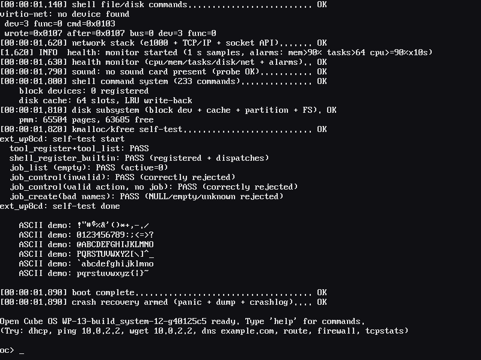
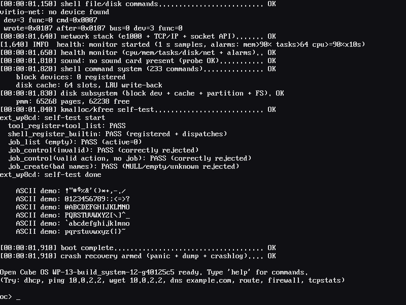

A from-scratch
x86_64 kernel.
Everything extensible.
Open Cube OS is L0: a complete, self-contained 64-bit kernel that boots on real hardware and in QEMU, and hands you a WinRE-style recovery shell — oc> — with 233 commands. Not a Linux fork: 140,672 lines of original code, Apache 2.0.
Open Cube OS WP-14-docs_release ready. Type 'help' for commands. oc> help -a ... 233 commands, alphabetical ... oc> dhcp nic0: 10.0.2.15/24 gw 10.0.2.2 oc> ping 10.0.2.2 64 bytes from 10.0.2.2: seq=0 time=1.2 ms oc> wget 10.0.2.2 saved: index.html (45 bytes) oc> health cpu 3% mem 42% tasks 4/64 oc> █
Features
A real kernel, not a demo: preemptive scheduling, four-level paging, ring-3 processes, a VFS over four filesystems, a full TCP/IP stack with TLS and SSH (client and server), 16 driver families, crash dumps, hardware watchdogs, and OTA A/B updates.
Hybrid BIOS + UEFI
One ISO boots both firmware paths through GRUB 2.12, with an A/B slot menu and the kernel attached as its own install payload.
PMM / VMM / heap
Bitmap physical manager over the multiboot2 map, 4-level paging, kmalloc with coalescing and stack/heap growth by page fault.
Preemptive scheduler
Priority + round-robin over TCBs, 100 Hz tick, soft-timer wheel, IST-separated exception stacks, live 3/3 trap self-test on every boot.
User programs
ELF loader, 53 syscalls, fork/exec/pipes/signals/select/mmap, and an in-tree shared-object loader with dlsym and PIE relocations.
TCP/IP + TLS + SSH
Seven NIC driver families, congestion-controlled TCP, sockets, firewall, an HTTPS client with X.509 verification, and a real sshd in-guest.
NVMe to FAT32
AHCI/ATA-DMA/NVMe/virtio/USB-MSC/SD/SCSI block devices; FAT32 with LFN, exFAT, ext4, ramfs; a persistent /etc volume.
Four USB stacks
UHCI, OHCI, EHCI and xHCI host controllers with MSC, HID, serial and audio classes - hotplug included.
Crash + watchdogs
Register dumps to serial and crashlogs to /etc, Intel TCO and ACPI WDAT hardware watchdogs, policy watchdog slots, health alarms and JSON export.
233 commands
Pipes, redirection, background jobs, wildcards, env, aliases, scripting, and a full-screen editor - help in two views (-a / -w).
Terminal UI
Desktop, taskbar, menus, forms, editor and system apps on the framebuffer - plus a Chinese console layer with a pinyin IME.
A/B updates
Manifest-driven OTA with SHA256 + signature verification, staged install onto the inactive slot, automatic rollback.
162 extension interfaces
L0 ships without L1 - the surface (plus driver/OTA/watchdog/health headers and a solib loader) is the contract for everything above.
Quick start
From download to an oc> prompt in about a minute. Any machine with QEMU works; real hardware boots the same ISO from USB.
Boot the ISO in QEMU
One command - the ISO is self-contained, 512 MiB of RAM is comfortable.
Watch it come up
One OK line per subsystem: multiboot2 handshake, long mode, framebuffer, IDT, PIT, PMM, drivers, VFS, network, shell.
Drive the machine
Bring up networking, pull a page, inspect the system - all from the recovery shell.
Go deeper
The documentation center has the user manual, all 233 command pages, the developer handbook, the L1 extension guide and the architecture deep-dives.
It really runs
Captured from the release ISO in QEMU - the BIOS and the UEFI boot path, straight to the shell prompt.


The two-layer idea
“Everything is extensible” is the whole design: L0 is a complete kernel and nothing more; everything users actually see above the shell is meant to be an L1 module riding the surface.
Open Cube OS
The kernel + the oc> recovery shell. Boots, diagnoses, repairs, installs, updates. This repository.
Upper extensions
Anything built on the 162-interface surface - loaded as a shared object at runtime or compiled against the headers. L0 ships none.
Cube OS = L0 + L1
The roadmap: a complete, daily-usable system assembled from the kernel below and the extension ecosystem above.
See the whole picture
Boot flow, every kernel subsystem, the TUI desktop and the 162-interface L1 surface, each on its own page.